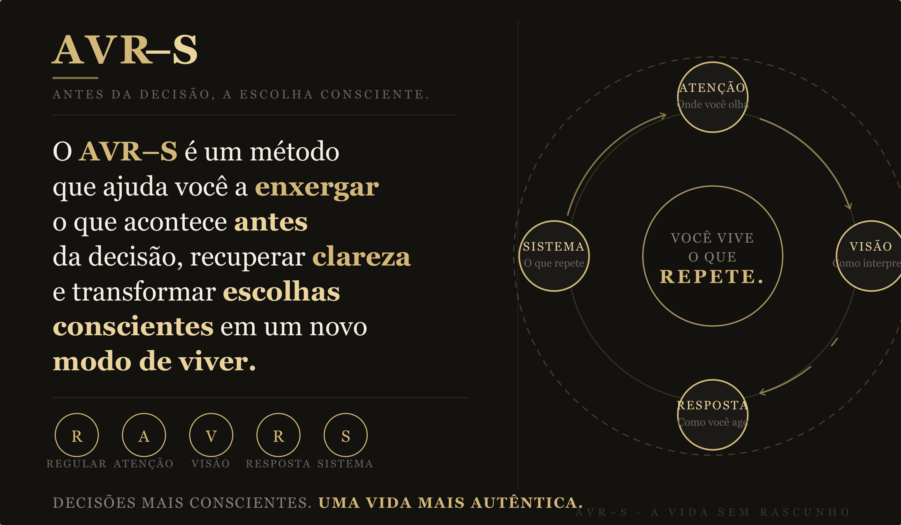
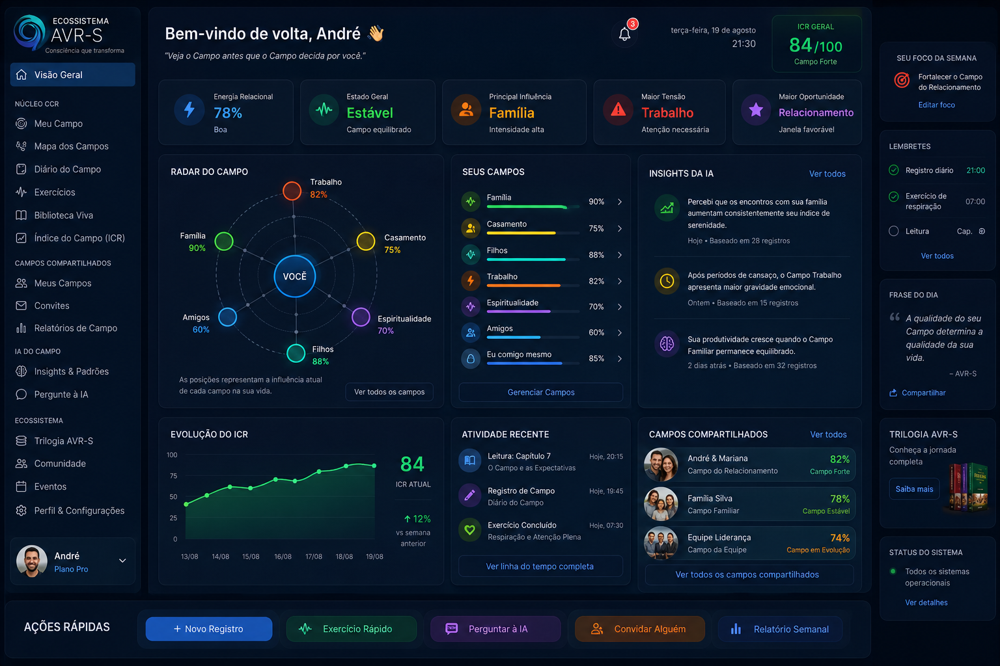

Acesso rápido
App AVR–S
github.io/avrs-app-
Repositório
github.com
PagBank Pro
R$19/mês
Worker IA
Cloudflare
Firebase
avrs-app · southamerica
INPI
inpi.gov.br
E-mail
audax.silfexsil@gmail.com
Este Cockpit
github.io/avrs-cockpit
WhatsApp
(21) 96416-4234
Método central
AVR–S
A Vida Sem Rascunho · Consciência e Decisão
Audax Consultoria · CNPJ 33.344.650/0001-03
Regular
Atenção
Visão
Resposta
Sistema

O ecossistema em 5 linhas
1Os livros explicam.
2O workshop demonstra.
3O aplicativo pratica.
4O cockpit acompanha.
5O AVR–S transforma.
Cada elemento no seu papel · cada um completando o anterior · Audax Consultoria
Ecossistema AVR–S
Mapa completo do ecossistema · Audax Consultoria

O ecossistema AVR–S conecta origem, consciência, prática e multiplicação em um ciclo contínuo de transformação.
Visão de Plataforma · App CCR
Dashboard "Seu Campo" · norte de longo prazo

Norte de longo prazo do App CCR — parqueado pós-lançamento. O protótipo navegável (campo.html) valida a visão; a construção real é pós-Trilogia. Prioridade absoluta continua Trilogia (17/09) + Finance.
Sobre o livro · A Vida Sem Rascunho
A Vida Sem Rascunho
Consciência, Decisão e o Protocolo AVR–S · André Silfexsil · Audax Consultoria
Vivemos em modo rascunho — adiando escolhas, reagindo sem consciência, acumulando arrependimentos. Este livro propõe uma ruptura: parar de viver como se houvesse uma segunda versão.
O Protocolo · 5 camadas de decisão consciente
RRegular
AAtenção
VVisão
RResposta
SSistema
O que o livro entrega
- → Framework de decisão replicável
- → Diagnóstico de distorções internas
- → Separação Fato × História × Projeção
- → As 8 camadas do protocolo completo
- → Casos práticos de aplicação
Para quem é
- → Líderes e gestores em transição
- → Profissionais sob alta pressão
- → Quem decide com emoção reativa
- → Quem busca consistência interna
- → Coaches e facilitadores de mudança
"Toda decisão passa por três filtros invisíveis antes de existir: seu estado interno, sua estrutura mental e sua atenção. O AVR–S torna esses filtros visíveis — e governáveis."
Trilogia da Transformação · Capas & Contracapas
Trilogia da Transformação · Mapa Diagramado
Materiais do projeto
PPTX
Slides completos da palestra institucional com capa banner, ciclo AVR–S e método central. Versão v8 com identidade visual premium.
PPTX
Análise comparativa posicionando o AVR–S frente a cinco metodologias de liderança: Situacional, Inteligência Emocional, Servidora, Growth Mindset e OKRs.
DOCX
Manual completo para condução do workshop: roteiro detalhado, timing por bloco, orientações de facilitação e gestão de dinâmicas em grupo.
DOCX
Guia de aplicação para líderes replicadores: como facilitar dinâmicas AVR–S com a equipe, roteiros de conversa e marcos de acompanhamento.
DOCX
Caderno de exercícios completo do participante: diagnósticos, mapas de percepção, reflexões guiadas e espaços de comprometimento pessoal.
DOCX
Roteiro aprofundado do workshop AVR–S: estrutura modular de 8 horas, scripts de facilitação, transições e instruções de cada dinâmica.
DOCX
Material imprimível para dinâmicas em equipe: automáticos, regras invisíveis, acordos conscientes e checklist AVR–S para uso em sessão.
Tríade de implementação
Proteção intelectual · uso interno
Registro INPI — Marca AVR–S
🔒 ConfidencialClasses 41 (educação) e 42 (software) · Custo estimado R$710 · inpi.gov.br
Status dos Projetos · privado
Acesso restrito · entre com a conta de admin
Editar projeto
Sequência de ativação
Concluído
Em andamento
Pendente
· toque nos itens para alterar
Checklist de lançamento · Setembro 2026
Anotações do projeto
Registro de decisões e próximos passos